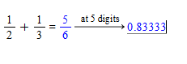
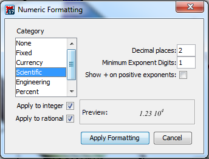
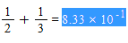
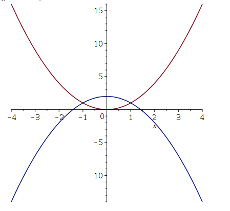
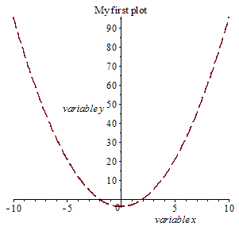
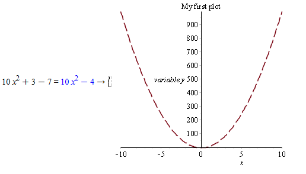
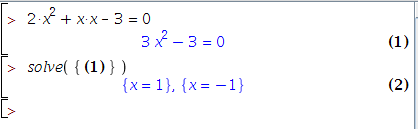
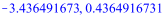
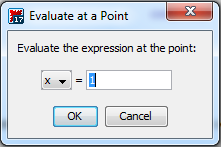
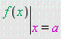

Lab 1: Functions And Getting Started with Maple
(Click here for the Sage version)
By Chris Tralie (drawing heavily from work by Lisa Grossbauer, Chris Sadowski, Ann Marie Veca-Schilling, and Susan Adam in Part 1 and Part 2)
Table of Contents
Getting Started with Maple
As we have shown in class, Maple is a technical computing and documentation software package for mathematics, which you will use to explore some of the concepts we learn in calculus in pairs. To install Maple on your local machine, you should follow these directions (NOTE: You can also access the share drive from Grizzly Gateway). Please post on Microsoft Teams if you are having issues with the installation. If all else fails, you should be able to access Maple via a virtual machine on Grizzly Gateway.
Before we get started, it is important to familiarize yourself with the extensive help that is available through Maple. The Maple Portal has video tutorials on many different aspects of utilizing the software. If you get stuck on something look for Maple help or visit the Maple Portal. The labs will be designed to walk you step by step but you may need to troubleshoot at times, so use the resource! Quick ways to get help:
- From the input prompt line type
?command, which will return the help section for that command. Try it for thesolvecommand which is a very useful algebraic command, ?solve. Maple will return the help pages relating to the solve command. -
Click to activate the window put your cursor over a keyword (ex.
solve) and Press F2. Try this method of getting help for the following maple instruction:
You should see the same help pages pop up.solve({t2y2 = 0, t - y = 1, t = 0}) - If all else fails, have a look at top 10 mistakes in Maple list to see if you're making one of them!
Lab Report Format
Rather than using Microsoft Word or some other text editor, you will actually be writing your lab reports inside of Maple itself. Maple has both a Text Mode and a Math Mode that you can switch between when making your reports. You can click back and forth between modes by simply selecting Text (when documenting) and Math (when working math problems) on the tool bar. This feature will allow you to embed mathematical equations and mathematical work directly in a text document, which would be an absolute pain in Microsoft Word. Below is a screenshot of how you might format your report. Circled in red is the toolbar where you can switch between math mode and text mode.
Other Tips
-
Maple has both a document and worksheet mode. From the
filemenu, selectnewand you will be given the option to select worksheet mode or document mode. The worksheet mode is the more traditional usage of Maple. However, the document mode produces a bit more elegant documents. Use of the worksheet mode is easier for quick computational work (you can treat it like a souped up calculator at that point), but when you are producing your lab reports, document mode is preferable. You will notice a difference in command prompts between the two modes. -
Save your Maple Worksheet periodically just as you would while working with any document. Click the file tab and select Save A...so that you can specify the directory that you want to save your work. The files created by Maple will have a
.mwextension. If you want to return to a particular.mwfile just double click and Maple will open and populate the worksheet with your work. - Please be sure to spell check your document. Much of the functionality that you have with Microsoft Word is available in Maple, so explore Maple's documenting capabilities.
What To Hand In / General Guidelines
-
When you are finished all of the steps in the lab and you have written up answers to the associated questions, you should turn in your
.mwMaple worksheet that you saved. Each group will submit exactly one.mwfile via Canvas. The title of your electronic version should include both lab partner names & Lab # for ex., “Taylor Swift and Ella O’Connor Lab #1”. - You should Answer all questions with complete sentences in Maple. Clearly identify each question. You will use the text and math modes, as described in this manual, to create a readable document with grammatically correct language. It is essential to communicate effectively using the appropriate mathematical language.
- Label all graphs, axes, and explain your plots!
- Add any additional observations and comments that you may have.
- Please make sure that your report is readable to a person not literate in Mathematics. Someday you will be working in industry or academia, and you will need to effectively communicate your findings to your peers.
Part 1: The Basics of Maple Features And Syntax
The purpose of the first part of the assignment is simply to get you familiar with the basics of Maple, so just follow the directions and execute the commands. The .mw file should show that you have successfully run all of the commands.
1. Basic Arithmetic And Keyboarding
When you launch Maple, you start with a blank document with menus and toolbars at the top and palettes on the side. Explore each of the palettes by expanding them. At the cursor, you can start typing a math statement. PressEnter to see the result. Be sure you are in Math mode. For example, you should do the following for this lab:
- Type in
3+2 Enter - The result is returned on the next line with a label
(1)that increments with each command. You can access the results to use in other computations by typingCtrl Land entering the number of the equation label. - For lab reporting purposes, it is better to have the answer returned on the same line. Type in
3 + 2 Ctrl =.
2. Entering Basic Numerical Expressions
-
Fractions:
Maple calculates exact answers, so fractions remain as fractions throughout all calculations to reduce approximation errors in multi-step problems. On a new line, enter
1/2 + 1/3Notice how typing a
'/'automatically moves you to the denominator. The right arrow will take you out so you will need to type \[ 1/2 \rightarrow + 1/3 \] PressEnterfor the result of5/6. -
Approximate Numerical Representations:
Right click on the 5/6 and select Approximate from the context menu. Select accuracy of 5 digits. The following should display:
 -
Numeric Formatting Options:
If your problem already uses decimals, then Maple keeps to the same format. However, you can apply different formatting to numeric results by right-clicking on 5/6 and selecting
Numeric Formatting. Then, a dialog box appears, and underCategory, you can selectScientific, then pressApply Formatting:

The following answer will then appear in your maple Worksheet:
 -
Exponent Mode and Square roots:
In Maple, there are two ways to take square roots. The first is to raise an expression to the
1/2power by going into exponent mode with the^symbol. As with fraction mode, you can exit exponent mode by pressing the right arrow. For example, type25 ^ 1 / 2, followed by the right arrow andEnter. You should have an output of5. Alternatively, for square roots in particular, you can use thesqrt()command. For example, type insqrt(25)and press Enter. You should get an output of5here as well. -
Multiplication:
Multiplication in Maple is done using the
*symbol. For example, type in3*2and pressEnter. You should receive and output of6. You should always use*to multiply things together, including functions, numbers, constants, and general expressions, to avoid confusion. It is a very common error to omit this symbol. There are exceptions to this rule, but they lead to confusion for beginners.
3. Numerical Expressions with Special Symbols
In addition to fractions, special symbols such as e and π remain as such throughout all calculations. You can access Pi from the Common Symbols Palette and e from the Expressions Palette. An alternative way to access these symbols/commands are through Maple's command completion, where you type the first few characters of the symbol and press Esc. Maple returns a list of possible symbols/commands and you select the one that you want from the list.
- The constant "Pi"
Type in
5/6 + Piand pressEnter. You should have an output of \[ \frac{5}{6} + \pi \] It is important to use a capital letter P here, since Maple will not understand "pi." Typing inevalf(%)and pressingEnterwill give you a decimal approximation of 5/6 + π. - The constant "e"
In sum, DO NOT USE THE KEYBOARD “e” !!
Old versions of Maple usedEfor the constant we call "e." This is no longer the case. If you need this constant, type ine := exp(1), and pressEnter. Maple will now understand that the lettererepresents the constant "e." What we have done is the following. The command“:=”tells Maple to assign a certain value to the expression on the left-hand side. In this case, we are giving the symbol “e” a value. Namely, we are giving it the valueexp(1), the exponential of 1, or, as we normally write,e. Type inevalf(e), and pressEnterto get a decimal approximation of the constant “e”. Take note of this decimal value; it may come in handy later in this lab
4. Algebraic Expressions
- Expressions with variables:
- Evaluating Expressions At Points:
- Graphing Expressions: Type in
In Maple, you may enter all sorts of expressions with variables having any name you choose. For example, type in f:= (x+2*y)^3; and press Enter. You have now entered the expression \[(x+2y)^3\] and saved it in a variable named f. Type in f and press Enter. Notice that Maple does not automatically expand these expressions for you! Type in expand(f) and press Enter. Maple will now output the expression you gave it, but expanded. Note that this expanded expression is not saved to the variable f. Maple will still think f is the non-expanded expression you gave it. You can save the expanded expression to a variable called g by typing g := expand(f) and pressing Enter. We may also factor expressions using the factor command. Type in factor(g) and press Enter to factor g.
NOTE: It is a common mistake to type = instead of := when defining expressions with variables
Oftentimes, we want to substitute numbers into our variables. Notice that since f is an expression, we can't simply write something like f(1,2) to substitute values into it. To substitute numbers into an expression, we use the "subs()" command. Type in subs(x=1,y=2,f) and press Enter. You have just told Maple to substitute 1 for x and 2 for y in the expression f. You should have an output of 125. In this case, the command only sets the x=1 and y=2 in the context of this expression, but if we had instead typed in x:=1 and pressed Enter, it would have set x to be 1 for the remainder of the worksheet. This is probably not a good idea, since we often want to use x as a variable in our expressions!
plot(x^2-4) and press Enter. Maple will display a graph of \[x^2-4\] and will pick a domain for you. We can change the domain if we wish to view a different part of the graph. Type in plot(x^2-4, x=0..15) and press Enter. This will show you the graph from x=0 to x=15.
5. Entering Functions
- Functions:
- Trigonometric functions and natural logarithm
- Graphing Functions:
One may also input functions into Maple. Recall that a function is a rule that takes a number as input and returns a number as output. Type in
h:=x -> x^2+5
and press Enter. We have just defined a function, called h, which takes a number (or expression!) as input, squares it, adds 5 to it, and then returns that value. For example, typing in h(3) and pressing Enter will return 14. Typing in h(Pi) and pressing Enter will return \[ \pi^2 + 5 \] Typing h(f) and pressing Enter will square the expression f we defined earlier and then add 5 to it! We can get the expression \[ x^2 + 5\] by simply typing h(x) and pressing Enter.
Maple will, by default, understand trigonometric functions and will expect their input to be in radians. For example, typing in cos(Pi) and pressing Enter will return an output of -1. Maple will also understand the natural logarithm function. For example, typing in ln(1) and pressing Enter will return 0.
We may graph functions in Maple by converting them into expressions. Type in h:= x -> x^2 – 3 and press Enter. Now, to graph h(x) from x=0 to x=15, type plot(h(x),x=0..15) and press Enter. This will give the desired graph.
NOTE: It is a common mistake to forget to plug in x when going to plot a function
We can also plot two functions on the same graph by putting them in a list, denoted by square brackets. For instance, type
f(x) := x^2
g(x) := 2-x^2
plot([f(x), g(x)], x=-4..4)
This will come up with the following plot:
6. Using Maple's Context-Sensitive Menus
- Type in the expression \[ x^2-4 \] then hover over this expression, and right click. The context-sensitive menu offers several operations that you can perform on the current expression: factor, simplify, solve, differentiate, integrate and plots to name a few that you will use this semester. Maple is smart enough to only offer operations that applies to this expression.
-
To plot the current expression select
Plots>2-D Plotfrom the context-sensitive menu. -
Modify the plot after it has been created by clicking on the plot. At this point, a blue box appears around the plot. You can expand it or shrink it by dragging the corners. Right click on the plot itself and use the context-sensitive menus to modify the line type, to modify color of the graph, to label the axes, to add a title to the graph, and to add a legend, among many other options. Play around with these options, as you will need to label all graphs and "make them pretty" to submit for your labs. Notice the context-sensitive menu appears only with graphing options.

7. Changing Previously Entered Code in Maple
- Mathematics in a Maple document are live, so you can go back to make changes and re-execute the problem to obtain a new result.
-
Go back to the very first line where you entered
3 + 2and change the 2 to a 8. Then pressEnterto obtain a new result of 10 (your final submission for this lab should reflect these changes. No need to keep both the changes and the original). -
Go back to
x2 - 4, change thex2to10*x2. Highlight the entire line, including the plot, and then click theExecutebutton found at the top of the Maple worksheet. All selected calculations are updated. Notice the updated graph (your final .mw submission should reflect these changes. No need to keep both the changes and the original)

Part 2: Algebraic Calculations
The second part is a continuation of the first part, with a focus on some additional algebraic tools that exist in Maple. As before, the .mw file should show that you have successfully run all of the commands.
1. Solving Equations Using Context Sensitive Menus
- Solving for a variable:
To represent an equation in Maple, use the
=sign for equality. Typea*x^2 + b*x + c = 0. Remember you need to explicitly define the multiplication or Maple will see "ax" as a variable instead of "a" times "x".Right click on the equation to get the context menu.
Select Solve>Solve for Variable>x. The quadratic equation will be returned. -
Solving for exact solutions:
By default, Maple will find the exact solution for an equation. Type in
2*x^2 + x*x - 3 = 0
Right click on the equation to get the context menu, and selectSolve>Solve. The following result appears
 -
Solving for numeric solutions:
Type
2*x^2 + 6*x - 3 = 0.
Then right click on the equation to get the context menu.
SelectSolve>Numerically Solve
The following result appears

2. Solving Equations Using Maple Commands
- Solving one equation in one variable:
Type in
solve(x^2-2=0,x)and pressEnter. The output will be the two solutions to the equation \[ x^2-2=0 \] Thesolve()command takes two inputs here: the equation we wish to solve, and the variable we wish to solve for. Notice, as usual, Maple does NOT give us a decimal answer. To instead obtain a decimal approximation, typeevalf(solve(x^2-2=0,x). -
Solving systems of equations:
Type
solve({x^2*y^2=0, x-y=1, x!=0})and pressEnter. You should obtain
{x=1,y=0}
as output, which is the solution of this system. By using curly braces { and }, we have given Maple a list of equations. We have told Maple that the equations we wish to simultaneously solve are \[ x^2y^2 = 0 \] \[ x-y = 1 \] and \[ x \neq 0 \]. Here, the symbol != means “not equal to” (this is fairly standard in programming in general).
3. Evaluating Algebraic Expressions with Menus
An expression in x written as h:=sin(x) is not a function. Maple interprets this as assignment of an expression to the name h. To find the value of an expression at a given value of x, you evaluate the expression at the point. Type
h := 2*x^2 + 6*x - 3
To evaluate at x=1: right click on the expression to bring up the context menu. Select Evaluate at a Point. The following dialog box appears:

The result returned is 5. You could also evaluate this expression with a direct call to the Maple command eval(h, x=1) or by selecting the evaluate symbol from the Expression palette. Use the tab button with the expression palette to fill in the necessary information:

4. Factoring
We will use the simple version of the Maple factor command. The factor function computes the factorization of a polynomial by the calling sequence factor(a), where a is a polynomial. Type
factor(x^3 + y^3)
Press enter, and the traditional formula will be returned. Now factor the equation
\[ 6x^2 + 18x - 24 \]
You should obtain the result
\[ 6(x+4)(x-1) \]
Alternatively, you could enter an expression, right-click on it, and use the context menu to select Factor.
5. Polynomial Long Division
Sometimes we want to divide a polynomial by another polynomial that isn't quite a factor, so there will be a remainder left over. We will now use Maple to perform polynomial long division, which will be useful in our next lab. Let's now write some code to divide a polynomial \[ p(x) = x^2 - 4x + 5 \] by the polynomial \[ q(x) = x + 2 \]
p(x) := x^2 - 4*x + 5
q(x) := x+2
qu(x) := quo(p(x), q(x), x)
rm(x) := rem(p(x), q(x), x)
Then evaluate the quotient and the remainder
qu(x)
rm(x)
This should output a quotient of \[ x-6 \] and a remainder of 17, respectively. As a sanity check to make sure this is correct, run the multiplication qu(x)*q(x) + rm(x), and verify that you get x2 - 4x + 5 back.
factor(expand(qu(x)*q(x) + rm(x)))
Now, plot the quotient qu(x) and the rational function p(x)/q(x) together on the same plot
plot([p(x)/q(x), qu(x)], x=0..30, legend = [typeset("Curve:", p(x)/q(x)), typeset("Curve:", qu(x))])
Question:
Visually, what seems to be happening ast gets larger in the above plot? The quotient here is known as the slant asymptote of the rational function P(t)/Q(t). We will talk about these more in the next lab.
6. Simplify
Maple's simplify command uses the basic algebraic rules to simplify expressions. Type
simplify(sin(x)^2 + ln(2*x) + cos(x)^2
The result that should appear is \[ 1 + \ln(2) + \ln(x) \]Alternatively, you could enter an expression, right-click on it and use the context menu select Simplify>Simplify.
7. Expand
The expand command distributes products over sums. This is done for all polynomials. Type expand((x+1)*(x+2)). The result that should appear is \[ x^2 + 3x + 2 \] Now type expand(sin(x+y)). The result that should appear is \[ \sin(x) \cos(y) + \cos(x) \sin(y) \] What an easy way to get those trig identities out!
Part 3: Stretching And Shifting
In this part of the lab, you will apply what you learned above to stretch and scale a function. First, choose a base for an exponential, and define it as a by running a := #, where # is your number. Now define an exponential function using your base as
f(x) := a^x
Now, plot f(x) and f(x + 2) together on the same plot, over some appropriate range of x. (Go back to the graphing expressions and graphing functions sections if you need a refresher on how to do this).
Question: What has f(x+2) done to the graph? Be sure this is clear on your plot
Now, plot f(x) and a^2 * f(x) on the same plot, with the former a solid blue line and the latter a solid green line. Finally, plot f(x), f(x+2) and a^2 * f(x) on one plot together, using the same color and line schemes as before.
Question:
What do you notice about f(x+2) and a^2*f(x)? Can you explain why this is happening?
Part 4: A Mysterious Number
In the final part of the lab, you will use what you know to define functions that you evaluate at different points. First, define a functionf(h) so that
\[ f(h) = (1 + h)^{1/h} \]
(If you forget how to do this, have a look at the functions section!). This function is undefined at zero, since it would involve 1/0 in the expression, but you can still evaluate it very close to zero. So try plugging in numbers that get closer and closer to zero, and record what you get (you can plug in different numbers on different cells). Be sure you are evaluating it numerically.
Question: What do the first three digits seem to be approaching?
Now, define another function, which is the following expression, up to some number ofN terms
\[ g(x) := 1 + x + \frac{x^2}{2!} + \frac{x^3}{3!} + \frac{x^4}{4!} + \frac{x^5}{5!} + ... + \frac{x^N}{N!} \]
Now numerically evaluate g at x = 1 for an increasing value of N.